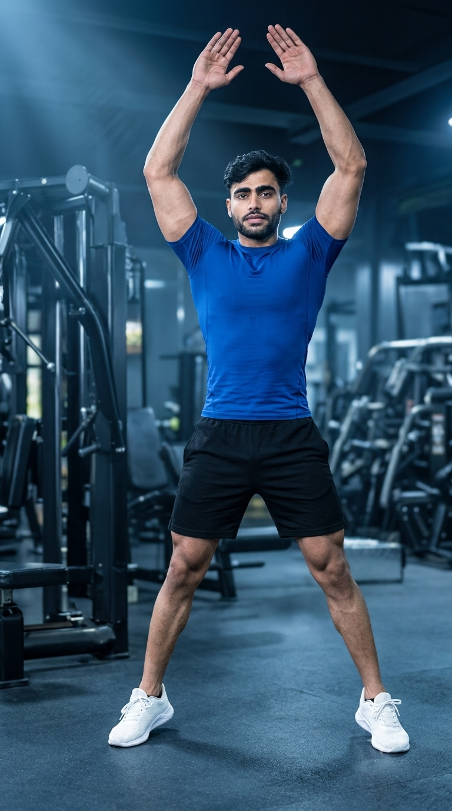

Primary Muscles
Quadriceps & Deltoids
Boost Cardiovascular Fitness, Burn Calories, and Improve Full-Body Coordination
Jumping Jacks are a classic full-body bodyweight exercise that elevates your heart rate, burns calories, and improves cardiovascular endurance without requiring any equipment. This dynamic movement simultaneously works the legs, shoulders, core, and calves while enhancing coordination, agility, and overall athletic performance. Whether used as a warm-up, conditioning drill, HIIT exercise, or fat-loss workout, Jumping Jacks provide an efficient and beginner-friendly way to improve fitness almost anywhere.

Quadriceps & Deltoids
Bodyweight
Beginner
Cardiovascular Exercise
Discover the primary and supporting muscles activated during Jumping Jacks. This full-body cardiovascular exercise engages the legs, shoulders, and core simultaneously while improving coordination, balance, and muscular endurance with every repetition.
The quadriceps generate force during every jump while the deltoids raise the arms overhead. Together, these muscles drive the continuous movement pattern and produce the majority of the exercise's workload.
The glutes and hip abductors stabilize the hips, control the outward movement of the legs, and help produce explosive power during every jump and landing.
The calf muscles generate ankle power during take-off, absorb impact when landing, and help maintain smooth, rhythmic jumping mechanics.
The abdominal muscles and hip flexors stabilize the torso, maintain balance, and coordinate the upper- and lower-body movements throughout each repetition.
Discover how Jumping Jacks improve cardiovascular fitness, increase calorie expenditure, strengthen the entire body, enhance coordination, and develop muscular endurance with a simple bodyweight movement that can be performed almost anywhere.
Jumping Jacks rapidly elevate your heart rate, strengthening the heart and lungs while improving overall aerobic capacity and cardiovascular endurance.
This high-energy exercise increases calorie expenditure, making it an effective addition to fat-loss workouts, HIIT routines, and conditioning programs.
Every repetition engages the legs, shoulders, calves, glutes, and core, helping improve muscular endurance, stability, and overall functional fitness.
The synchronized movement of the arms and legs improves balance, body awareness, rhythm, and coordination, supporting better athletic performance.
Jumping Jacks can be performed anywhere without specialized equipment, making them an excellent choice for home workouts, travel, and quick warm-up sessions.
Whether used before strength training or during high-intensity interval workouts, Jumping Jacks effectively prepare the body, elevate the heart rate, and improve workout performance.
Follow these step-by-step instructions to perform Jumping Jacks with proper jumping mechanics, coordinated arm movement, controlled landings, and correct posture for maximum cardiovascular and full-body conditioning benefits.
Stand upright with your feet together and your arms resting comfortably at your sides. Keep your chest lifted, core engaged, and knees slightly relaxed before beginning the movement.
Maintain an athletic stance instead of locking your knees before you jump.
Jump lightly while spreading your feet slightly wider than shoulder-width apart. At the same time, raise your arms in a smooth arc until your hands meet or nearly meet overhead.
Coordinate your arm and leg movements to create a smooth, rhythmic motion.
Jump again to bring your feet back together while lowering your arms to your sides. Land softly on the balls of your feet with your knees slightly bent to absorb impact safely.
Avoid heavy landings by keeping each jump light, controlled, and quiet.
Continue performing smooth, controlled repetitions at a steady pace while keeping your torso upright, core engaged, and breathing relaxed throughout the exercise.
Choose a pace that allows you to maintain good technique without sacrificing form.
Gradually reduce your pace before stopping. Return to a standing position and allow your breathing and heart rate to recover before moving on to your next exercise.
Never stop abruptly after a high-intensity set. A short recovery period helps your body cool down safely.
Avoid these common Jumping Jacks mistakes to improve movement efficiency, maximize cardiovascular benefits, and reduce unnecessary stress on your knees, ankles, and shoulders. Proper jumping mechanics and controlled landings make every repetition safer and more effective.
Heavy landings increase the impact on your knees, ankles, and hips while reducing movement efficiency and increasing the risk of discomfort or injury.
Land softly on the balls of your feet with your knees slightly bent to absorb impact smoothly.
Moving the arms and legs out of sync reduces rhythm, wastes energy, and makes the exercise less effective for full-body conditioning.
Raise your arms and spread your feet at the same time while maintaining a steady, controlled rhythm.
Performing Jumping Jacks too quickly often leads to poor form, shallow jumps, and reduced muscle activation while increasing fatigue.
Maintain a consistent pace that allows every repetition to be controlled from start to finish.
A relaxed core can lead to poor posture, unnecessary torso movement, and reduced balance during repeated jumping motions.
Keep your abdominal muscles gently braced and maintain an upright posture throughout every repetition.
Follow these expert coaching tips to perform Jumping Jacks with better technique, improve coordination, maximize cardiovascular benefits, and reduce the risk of unnecessary impact on your joints during every workout.
Focus on gentle, controlled landings by touching down on the balls of your feet before allowing your heels to settle naturally. This reduces impact on the knees and ankles while keeping the movement smooth.
Quiet landings protect your joints.
Perform each repetition at a consistent pace instead of rushing. A controlled rhythm improves coordination, maintains proper form, and helps sustain endurance throughout the workout.
Smooth rhythm beats maximum speed.
Raise your arms overhead as your feet move apart, then lower your arms as your feet come together. Proper synchronization improves efficiency and develops better movement patterns.
Move your arms and legs as one motion.
Keep your abdominal muscles lightly braced and your torso upright during every repetition. A stable core improves balance, posture, and full-body control while reducing unnecessary movement.
A stable core creates better movement quality.
Progress from learning basic jumping mechanics to performing high-intensity conditioning workouts by gradually increasing repetition volume, workout duration, and exercise intensity. A structured progression improves cardiovascular fitness, coordination, endurance, and overall athletic performance.
Begin by practicing controlled jumps, coordinated arm movements, and soft landings before increasing speed or workout duration.
Movement coordination, balance, posture, and safe landing mechanics.
Perform longer sets while maintaining a steady rhythm and proper technique to develop cardiovascular endurance and muscular stamina.
Aerobic conditioning, exercise consistency, and movement efficiency.
Gradually perform faster repetitions while maintaining smooth coordination and controlled landings to improve calorie burn, agility, and conditioning.
Speed, coordination, muscular endurance, and cardiovascular performance.
Incorporate Jumping Jacks into high-intensity interval training circuits by alternating work and recovery periods to maximize endurance, calorie expenditure, and athletic conditioning.
Maximum cardiovascular fitness, fat burning, stamina, and overall conditioning.
Find answers to the most common questions about Jumping Jacks, including muscles worked, calorie burn, workout duration, beginner suitability, and how to perform the exercise safely for the best cardiovascular and fitness results.
Jumping Jacks primarily work the quadriceps, shoulders, glutes, calves, and hip muscles while the core stabilizes your body throughout the movement.
Yes. Jumping Jacks are beginner-friendly because they require no equipment and can be performed at a pace that matches your current fitness level.
Yes. Jumping Jacks increase your heart rate and burn calories, making them an effective exercise for fat loss when combined with proper nutrition and a consistent training routine.
Beginners can start with 20 to 30 repetitions or perform the exercise for 30 to 60 seconds. Increase the number of repetitions or workout time gradually as your endurance improves.
Absolutely. Jumping Jacks are an excellent warm-up exercise because they increase body temperature, improve blood flow, and prepare the muscles and joints for more demanding physical activity.
Most people can perform Jumping Jacks three to five times per week as part of a cardio workout, warm-up, or HIIT routine. Allow adequate recovery if you are performing high-volume or high-intensity sessions.
Improve your cardiovascular fitness, coordination, and full-body endurance by combining Jumping Jacks with these effective cardio exercises. Together they create a balanced conditioning program suitable for beginners and advanced fitness enthusiasts alike.


Continue building your endurance, burning calories, and improving cardiovascular health with our complete collection of cardio exercise guides. Learn proper technique, muscles worked, training tips, common mistakes, and progression strategies for every fitness level.